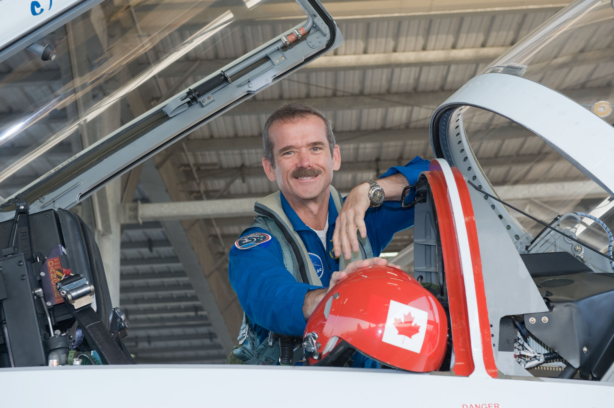

Chris Hadfield is a Canadian astronaut,
engineer, and former Royal Canadian Air Force pilot.
Born in Sarnia, Ontario, he developed a passion for space exploration at a young age.
Hadfield pursued engineering at the Royal Military College and later became a skilled
test pilot before joining the Canadian Space Agency. His dedication led him to become
the first Canadian to command the International Space Station.
Chris Hadfield achieved numerous successes
throughout his career. He became the first Canadian to walk in space
and later commanded the International Space Station, earning global
recognition for his leadership. Hadfield also gained fame for sharing
life in space through social media, inspiring millions with his educational
videos, photography, and music performance from orbit.